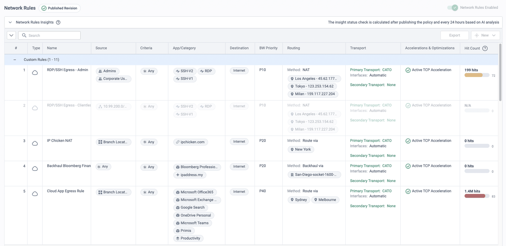
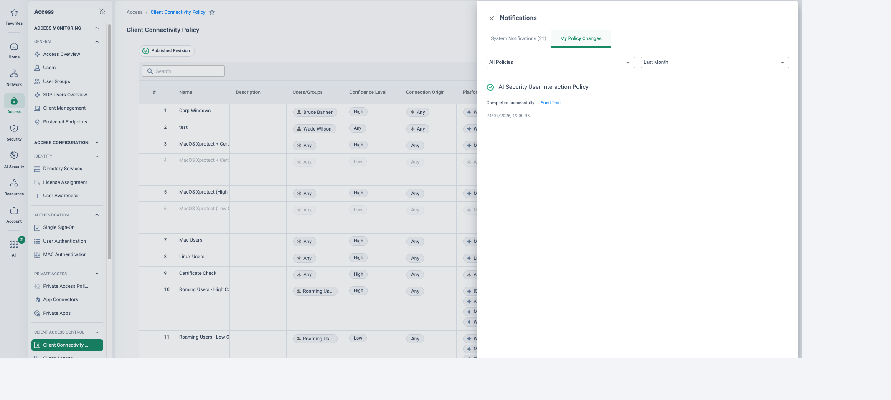
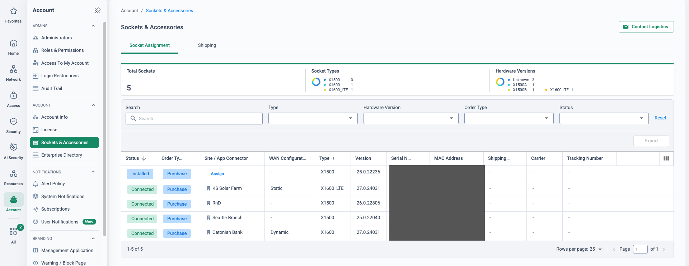

Why this matters
M&A is where network agility gets tested in public. Every acquisition arrives with its own estate — MPLS contracts, firewalls, VPN concentrators, a separate directory — and the value of the deal depends on how quickly the two organisations can genuinely work together. Integration measured in quarters is integration the business notices.
The objective: move from “MPLS-to-anything” legacy plumbing to an elegant, future-proof design — a converged platform that unifies and simplifies the target operating model, so each new acquisition is an onboarding exercise, not a network project. Bring off-net sites on-net, deploy with ease and at scale, and decrease operational time-to-value.
Why M&A network integration drags
The legacy integration project
- New circuits or MPLS contract novations before anything moves
- Site-to-site VPN meshes bolted between two firewall estates
- Hardware refresh and hands-on engineering at every acquired site
- Two security stacks, two policy models, months of parallel run
The identity gap
- Two directories with no common policy language between them
- Acquired users waiting on directory trusts — or sharing VPN accounts
- Network policy written in IP ranges, blind to who is connecting
- No per-user visibility or audit trail across the combined estate
“When you last acquired a company, how long did it take before their users could reach your applications under your security policy — and what did you compromise on to get there?”
Where this sits in the Cato SASE platform
- Acquired sites are defined as code and created through the Cato GraphQL API with Terraform.
- Zero-touch Sockets ship to each acquired site and connect to the nearest PoP as they are plugged in.
- The acquired estate joins the global backbone and reaches London DC under the existing converged policy.
- Entra ID provisions acquired users and groups, so WAN firewall rules can name them from day one.
Acquired sites on-net in days, identities in policy on day one
Everything Cato needs to onboard a site is an API call. Define the acquired sites as code — Terraform against the Cato GraphQL API — and the sites, their ranges and their locations exist in the account in minutes. Ship a Socket to each site; it connects to the nearest PoP and the acquired estate joins the same global network, under the same converged security policy, as London DC and the HQ lab site. In parallel, Entra ID integration provisions the acquired users and groups, so policy can name them immediately — no directory trust project required.
Deploy with ease and at scale via the Cato API
Define x sites as code and create them in one Terraform run. Sockets are zero-touch: ship, plug in, and each site joins the backbone — no engineer on a plane.
Entra ID for provisioning and identity awareness
Connect the acquired company's Entra ID tenant and its users and groups are provisioned into Cato automatically — identity awareness across the combined estate.
Usernames in network policy immediately
WAN firewall rules reference acquired users and groups by name from day one — least-privileged access during integration, without waiting for directory trusts.
Decrease operational time-to-value
No circuit orders, no firewall meshes, no appliance builds. One converged platform simplifies the target operating model — and the next acquisition is just as fast.

How to run the demo
Ask about the most recent acquisition (or divestiture): how long did network integration take, and what did it cost in people and circuits? Run the demo as a replay of that deal done the Cato way.
-
Frame the scenario
The acquisition closed on Friday. The goal: acquired sites on-net and acquired users reaching corporate apps — under your policy, visible by name — within days. Everything that follows is driven from a couple of files and one directory integration.
-
Create the site details file
Show the site definitions — one block per acquired site (or a CSV fed into
for_eachfor larger deals). Name, connection type, network range, location: that is all the Cato API needs.# sites.tf — one resource per acquired site resource "cato_socket_site" "leeds" { name = "ACQ-Leeds Office" site_type = "BRANCH" connection_type = "SOCKET_X1500" native_range = { native_network_range = "10.60.1.0/24" local_ip = "10.60.1.1" } site_location = { country_code = "GB" timezone = "Europe/London" } }
-
Run Terraform
Administration → API & Integrations
Show where the API key lives, then run
terraform apply. The plan lists every acquired site; the GraphQL API creates them in seconds. Point out this is the same workflow whether the deal brings three sites or three hundred. -
Confirm site creation in CMA
Monitor → Topology
The new sites appear in the topology alongside London DC and the HQ lab site. Explain the physical step: Sockets ship to site, anyone plugs them in, and zero-touch provisioning brings each site up on the nearest PoP.
-
Show Entra-provisioned users
Access → Users
Show users and groups synced from the acquired company's Entra ID tenant — provisioned automatically, no manual account creation. Pick a user (say “Priya” from the acquired side) to carry through the next step.
-
Use the acquired group in a WAN firewall rule
Security → WAN Firewall
Open (or build live) a rule with the Entra-provisioned acquired-company group as the source and the London DC application ranges as the destination. The close: identity-aware, least-privileged access for the acquired workforce, written by name, on day one — and every allow and block attributed to a username in Monitor → Events.
How to prove it in the customer's tenant
The demo replays an acquisition; the PoV replays it on the clock. This is an agility-timing pilot: every success criterion is an elapsed time, started and stopped at events both sides can point to, performed by the customer's own administrator with you watching — timed and witnessed, never asserted. Run it inside the frame from Running a Cato PoV: the clocks are agreed at the scope workshop before anything is configured, and each measured time lands in the evidence register as a dated artefact. Nothing in this pilot inspects content or blocks traffic — it is pure moves-adds-changes, so privacy sign-off never sits on the critical path.
Success criteria
Five criteria, five stopwatches. Agree the exact start and stop event for each row at the workshop — the elapsed time is the deliverable, so an ambiguous clock is a failed criterion:
| Criterion | The timed run | Start / stop events | Where it lives in the CMA |
|---|---|---|---|
| New site, socket in a box | A pilot branch stood up by whoever is on site — plug the Socket into power and the ISP handoff, no engineer, no console cable — until real traffic passes | Start: Socket powered on (photograph the timestamp). Stop: tunnel up in Topology and the first flows in App Analytics for the new site | Monitor → Topology · Monitor → App Analytics |
| Global policy change | A rule change published once and propagated to every PoP — no push jobs, no maintenance window, no per-device rollout | Start: Publish clicked. Stop: My Policy Changes shows 100 % propagation (Cato's documented average is under a minute) | Notifications (bell) → My Policy Changes |
| Bandwidth change, no truck roll | The pilot site's configured link bandwidth raised in the CMA — the kind of change that used to mean a circuit order or a site visit | Start: Site Configuration edit saved. Stop: the new ceiling visible in the site's Real Time throughput graphs under load | Network → Sites → Site Configuration · Site Monitoring → Real Time |
| Pop-up site: up and down | A temporary site — a project office, an event stand, an M&A war room — created, passing traffic, then cleanly decommissioned with the licence and Socket back in the pool | Two clocks: creation (definition applied → traffic passing) and teardown (decommission started → site deleted, Socket showing Installed) | Network → Sites · Monitor → Topology |
| Every change attributed | The whole pilot re-read from the audit log: each change above shown with who made it, when, and the previous and new values | No clock — the stop condition is completeness: one Audit Trail view covering all four runs with nothing unattributed | Administration → Audit Trail |
- Scope: one pilot branch Socket plus one spare Socket for the pop-up (any model — the point is reuse), shipped to site before the timed day. The courier is not part of the criterion; the clock starts at power-on.
- Licences: a site licence for the pilot branch and one spare for the pop-up. A site without an assigned licence does not pass traffic — the pop-up criterion depends on that spare, so agree it with the commercial team up front (site licences).
- Firewall ports where a Socket sits behind an existing edge firewall: outbound UDP 53, UDP 443 and TCP 443, plus DNS resolution of the Cato service domains — vpn.catonetworks.net, the cc2 controllers and steering.catonetworks.com (Socket connection prerequisites).
- An API key under Administration → API & Integrations if the sites are defined as code — the same Terraform definition from the demo runbook works unchanged.
- A named witness: the customer administrator who performs every change, and an agreed timestamp source (the CMA's own event times plus a phone camera for the physical steps). Agility proven by the vendor's own engineer proves nothing — the customer drives, you navigate.
- Not needed: TLS inspection, threat modules or identity integration — this pilot times the network plumbing. If the customer wants the timed policy change to name an acquired Entra ID group (the full M&A story), stage the directory integration first and add it as a sixth criterion rather than blocking these five.
Configuration walkthrough
-
Agree the clocks, then build the register
One row per criterion: start event, stop event, who performs it, who witnesses it. Ban retrospective timing — if a run was not clocked live, it reruns. This discipline is what makes the wrap-up unarguable: the register holds elapsed times with artefacts either side, not recollections.
-
Define the sites as code — the definition file is your template
Administration → API & Integrations
Reuse the demo runbook's Terraform definition for both the pilot branch and the pop-up — name, connection type, native range, location is everything a site needs (adding sites in the CMA). The CMA has no separate site-template construct; the versioned definition file is the template, which is precisely the point — the pop-up is a copy-paste-edit of the pilot branch, and the next acquisition is a
for_eachover a CSV. Creating the site in the CMA works identically if the customer prefers clicks to code; time it either way. -
Run the zero-touch clock
Monitor → Topology
On the timed day: whoever is on site connects the ISP handoff to the Socket's WAN port, LAN to port 1, and powers on — that photograph starts the clock. The Socket connects to an optimal PoP automatically and upgrades its own firmware if needed (X1500 deployment guide). One admin action remains — zero-touch, not zero-click: the CMA raises an Activate New Socket notification and the witness assigns the Socket to the waiting site. Tunnel up in Topology, first flows in App Analytics: stop the clock. Time the pop-up site's creation the same way.
-
Time the global policy change
Notifications (bell) → My Policy Changes
Have the witness edit a rule that touches the new site — adding it to a network rule or a WAN firewall rule is ideal, because its hit count later proves the rule is live. Changes save into a private unpublished revision (name it after the criterion), and nothing applies until Publish (policy revisions). Publish, then watch My Policy Changes track the change to 100 % across every relevant PoP — Cato's documentation states policy changes propagate on average in under a minute. Screenshot the completed status with its timestamp against the publish time: that artefact is the criterion.

What the timed change lands in (demo tenant, fictional identities): one published revision governing every site, with per-rule hit counts. In the pilot, those counts on the newly connected site are the proof the change is firing, not just propagated. -
Time the bandwidth change
Network → Sites → Site Configuration
Raise the pilot site's configured upstream/downstream on the WAN interface — whole numbers or one decimal, within what the licence and the physical line support — and save. Start a bulk transfer and watch the throughput ceiling move in the site's Real Time graphs. Contrast this out loud with the legacy answer: a circuit order measured in weeks or an engineer visit measured in days, versus a witnessed edit measured in minutes. If the commercial licence itself changes mid-contract, that is an account-team conversation — what the PoV proves is that applying the change is an edit, not a truck roll.
-
Stand the pop-up down — and time that too
Network → Sites
Agility cuts both ways: the pop-up criterion only passes when the site is gone and the parts are reusable. Follow Cato's documented decommission sequence — remove the site from groups and policies, unassign its licence, unassign the Socket (Site Configuration → Socket → Actions → Unassign), wait for the Socket to show Installed under Sockets & Accessories, then delete the site (decommissioning a Socket site). The licence returns to the pool and the Socket goes back in the drawer for the next pop-up — screenshot the empty slot in Topology and the Installed status as the stop artefacts.
-
Close with the audit trail
Administration → Audit Trail
Filter the Audit Trail to the pilot window and walk it with the witness: site created, Socket assigned, policy published, bandwidth edited, site deleted — each entry attributed to the named administrator with previous and new values shown for the policy changes (using the Audit Trail). For a network team inheriting an acquisition, this is the quiet closer: every change the pilot made is already evidenced to change-control standard, with nothing written up by hand.
What good output looks like
By the wrap-up the register holds four elapsed times and one completeness check: power-on to passing traffic for the pilot branch; publish to 100 % propagation with the sub-minute screenshot; the bandwidth edit with its before/after Real Time graphs; the pop-up's two clocks book-ended by the Installed Socket status; and the Audit Trail view that attributes the lot. Put the times next to the customer's own history — their last new site, their last global firewall change, their last bandwidth upgrade — and let the register argue the M&A case: an acquisition is just these four moves repeated per site.


Troubleshooting
Socket powers on but never connects
Nearly always the upstream firewall at the new site. Check outbound UDP 53, UDP 443 and TCP 443, and that the Socket can resolve vpn.catonetworks.net, the cc2 controller domains and steering.catonetworks.com. Fix the allowlist before touching the Socket — and pre-stage these rules at pop-up venues you don't control.
No "Activate New Socket" notification
The Socket may still be pulling its firmware upgrade — the notification follows the upgrade, so give it time on a slow link. Check the Socket's status under Sockets & Accessories; a unit reused from a previous site that still shows Delivered may need a factory reset before it re-registers.
Second WAN link won't tunnel
A documented limitation: with a NAT device between Socket and PoP, source-port rewriting can stop one or more WAN links connecting. Give the Socket public-facing paths or NAT rules that preserve source ports — worth checking before a timed run at a site behind someone else's router.
My Policy Changes shows nothing
By design it tracks only policies you Publish (not pages that merely Save), only your own changes, and only the last 30 days. Make sure the witness who clicks Publish is the one watching the propagation — another admin's session will not see the entry.
The change isn't in the Audit Trail yet
The KB notes policy changes can take several minutes to be recorded in the Audit Trail — that is logging latency, not propagation. Time propagation in My Policy Changes; read attribution in the Audit Trail afterwards. Don't let the two clocks get conflated in front of the customer.
Site won't delete cleanly
Teardown fails when dependencies remain: the site is still referenced in groups or policies, or the licence and Socket are still assigned. Follow the decommission order exactly — references, licence, Socket, then delete. A site left without a licence outside this flow simply goes Disabled and stops passing traffic, which is not the tidy exit the criterion demands.
Gotchas & exit
- Zero-touch has one admin click. Nobody technical is needed at the site, but activating a new Socket is a deliberate CMA assignment, not silent auto-adoption — frame it as a security feature, because it is one.
- Licences bound the agility. Configured bandwidth must sit within the site's licence, and an unlicensed site does not pass traffic. Rapid moves-adds-changes are an operational reality inside the licence pool; changing the pool itself is a commercial motion — keep the two distinct in the criteria.
- The propagation figure is an average. "Under a minute" is Cato's documented average, not a per-change guarantee — time several publishes across the pilot rather than betting the criterion on one run.
- Audit Trail windows: records are available for 12 months, viewed up to 3 months at a time — ample for the pilot, but export the filtered view into the evidence register anyway so the artefact outlives the tenant access.
The pop-up teardown already proved the exit works — repeat it for the pilot branch if it is not converting to production: decommission per the documented sequence, revoke the PoV API key under Administration → API & Integrations, and delete the timed test rules from the next published revision. The register — five criteria, four elapsed times, one attributed audit view — walks straight into the decision meeting, and the M&A conversation writes itself from there.